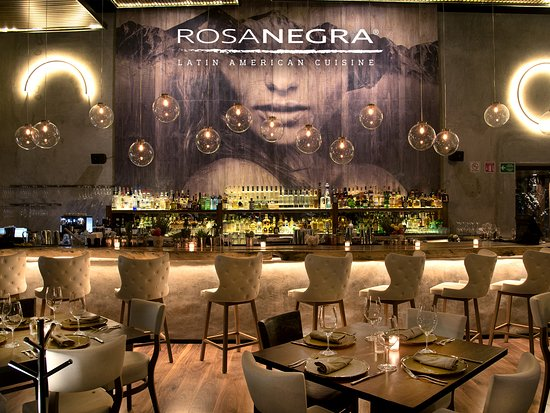

Ubicado en el impactante complejo Bohemian Square en la Zona Hotelera de Cancún, RosaNegra ofrece una experiencia de alta gastronomía, entretenimiento y servicio extraordinario. El diseño arquitectónico único, potencializa la proyección del espacio interior con el exterior con amplias terrazas de madera que fluyen sobre el agua y permiten contemplar espectaculares puestas de sol.